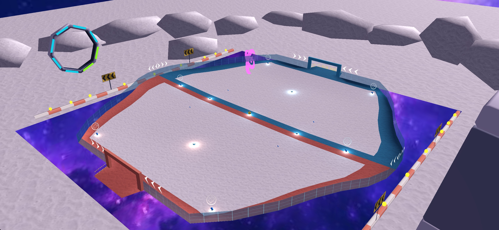
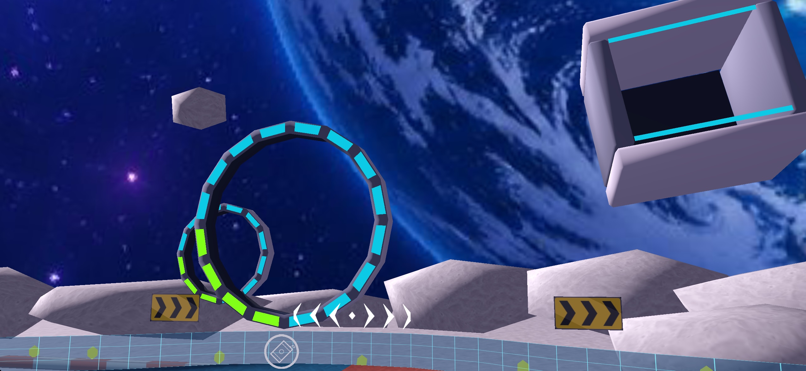
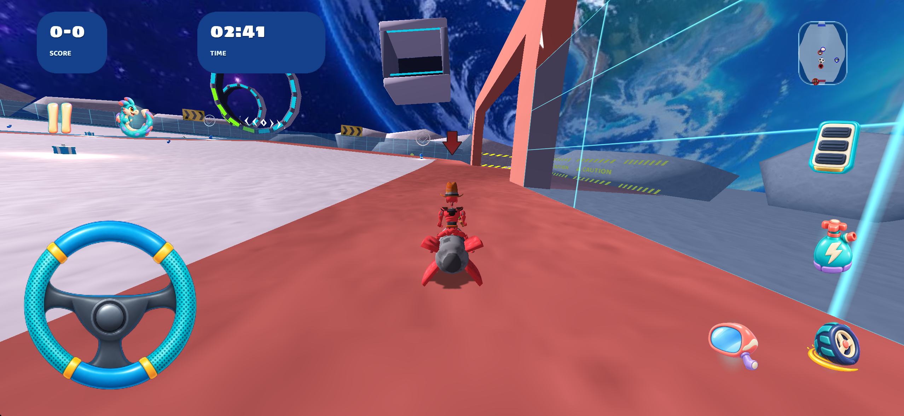
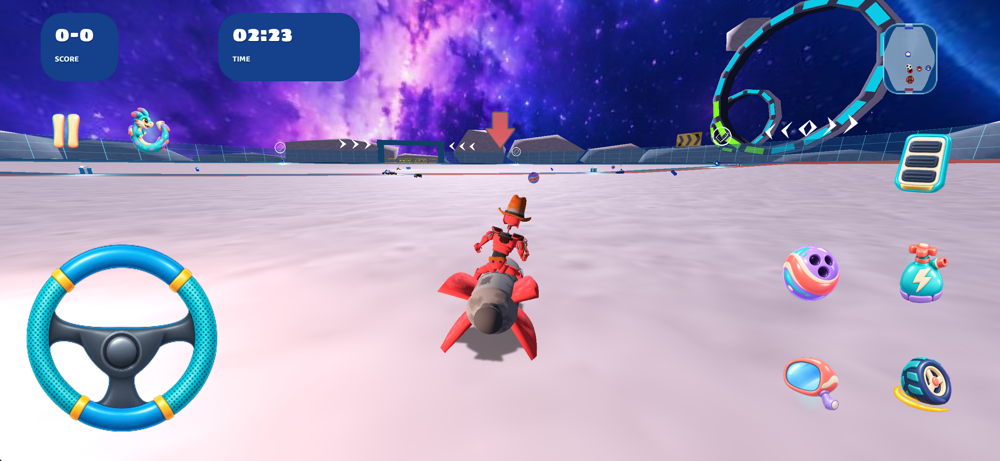

FLUXARA DRIFT · КАРТА 05 · 02.10.2026
ORBITAL Simulation — Soccer
Сохранён согласованный вид V5. Шесть существующих экземпляров светильников и боковых панелей модуля переведены в две общие модели. Добавлены 14 таких же светильников вдоль двух существующих бордюров. Всего 20 частей размещаются по координатам.
Кольца, модуль, лунное окружение и все исходные размеры, центры и направления сохранены. Нижняя часть новых светильников заглублена в бордюр на 4 сантиметра. Полотно, навигационная сетка, программные точки и линии, ворота, игровые объекты и скрипты сохранены.
Геометрия и изображения двух моделей взяты из существующей физической библиотеки без переделки. Новых пикселей текстур моделей нет. Два алиаса по 158 байт сохраняют разные настройки материала: светильник — unlit, панели модуля — solid. 168 повторявшихся треугольников заменены экземплярами общих моделей. Основное уменьшение веса получено техническим уменьшением прежнего крупного превью; экономия от самого извлечения этих малых моделей невелика.
| Ресурсы этапа | Байты |
|---|
| Исходные ресурсы карты | 5 914 626 |
| Карта с новым превью | 5 298 414 |
| Два общих экспорта, XML и два алиаса текстуры | 2 265 |
| Новое превью кампании, учтено целиком | 47 466 |
| Итог с новыми общими ресурсами и превью | 5 348 145 |
| Уменьшение | 566 481 |
Общее уменьшение: 9.58%. В расчёт входят все новые общие игровые файлы и целиком новое превью кампании. Файлы Blender и отчёта в размер игровых ресурсов не включены.
Изменения сохранены в проекте, ресурсах установленного приложения iOS Simulator и единственном итоговом файле Blender. Превью карты и кампании заменены кадром текущей сцены. Новая сборка приложения и новые заезды или проверки выезда не выполнялись.

Текущая сцена: дополнительные огни на бордюрах. Статичная камера игрового движка; кадр используется для превью.

Сохранённые кольца и модуль согласованной V5. Статичная камера игрового движка.
Вес · Сохранение · Согласованная V5
Игровые кадры ранее согласованной V5, до добавления огней

Архивный кадр футбольной игры V5, 22 секунды. Не является новым заездом.
Архивный кадр футбольной игры V5, 40 секунд. Не является новым заездом.